A complete field of view
A single RGB panorama covers the full surroundings, giving the policy spatial context for turns, landmarks, and stopping.
Towards Effective Panoramic
Vision-and-Language Navigation
PanoVLN follows natural-language instructions using a full panoramic view. It combines visual semantics and geometry, plans longer action sequences, and uses confidence to decide when to look again—connecting panoramic perception to continuous navigation.
Watch PanoVLN follow instructions through unseen simulated spaces and real-world environments.
Real-world videos show the robot view and external camera. Playback speed is labeled in each video.
Three complementary choices make panoramic navigation effective.
A single RGB panorama covers the full surroundings, giving the policy spatial context for turns, landmarks, and stopping.
PanoVGGT features enrich VLM tokens with geometry from the same RGB input, without extra visual tokens or depth input.
Confidence-guided execution selects how many predicted actions to carry out before observing and planning again.

Evaluation on continuous vision-and-language navigation benchmarks, using unseen environments.
Val-Unseen · 70.6% SPL
Val-Unseen · 65.9% SPL
| Method | R2R SR ↑ | R2R SPL ↑ | RxR SR ↑ | RxR SPL ↑ |
|---|---|---|---|---|
| PanoVLN† (Ours) | 73.9 | 67.9 | 74.1 | 63.9 |
| StreamVLN | 56.4 | 50.2 | 54.4 | 45.4 |
| JanusVLN | 60.5 | 56.8 | 56.2 | 47.5 |
| DualVLN | 64.3 | 58.5 | 61.4 | 51.8 |
| AwareVLN | 65.4 | 55.1 | 67.6 | 56.1 |
| PanoVLN (Ours) | 77.3 | 70.6 | 78.0 | 65.9 |
Numbers are transcribed from the paper’s LaTeX tables. NE is in meters; remaining metrics are percentages. † uses no navigation training data beyond R2R-CE and RxR-CE. Observation modalities vary across baselines; see the full comparison.
| Method | Pano. | Odo. | Depth | S.RGB | R2R NE ↓ | R2R OS ↑ | R2R SR ↑ | R2R SPL ↑ | RxR NE ↓ | RxR SR ↑ | RxR SPL ↑ | RxR nDTW ↑ |
|---|---|---|---|---|---|---|---|---|---|---|---|---|
| CMA* | ✓ | ✓ | ✓ | 6.20 | 52.0 | 41.0 | 36.0 | 8.76 | 26.5 | 22.1 | 47.0 | |
| GridMM* | ✓ | ✓ | ✓ | 5.11 | 61.0 | 49.0 | 41.0 | – | – | – | – | |
| ETPNav* | ✓ | ✓ | ✓ | 4.71 | 65.0 | 57.0 | 49.0 | 5.64 | 54.7 | 44.8 | 61.9 | |
| HNR* | ✓ | ✓ | ✓ | 4.42 | 67.0 | 61.0 | 51.0 | 5.50 | 56.3 | 46.7 | 63.5 | |
| ScaleVLN* | ✓ | ✓ | ✓ | 4.80 | – | 55.0 | 51.0 | – | – | – | – | |
| InstructNav | ✓ | ✓ | ✓ | 6.89 | – | 31.0 | 24.0 | – | – | – | – | |
| LAW | ✓ | ✓ | ✓ | 6.83 | 44.0 | 35.0 | 31.0 | 10.90 | 8.0 | 8.0 | 38.0 | |
| CM2 | ✓ | ✓ | ✓ | 7.02 | 41.5 | 34.3 | 27.6 | – | – | – | – | |
| WS-MGMap | ✓ | ✓ | ✓ | 6.28 | 47.6 | 38.9 | 34.3 | – | – | – | – | |
| CMA | ✓ | ✓ | 7.37 | 40.0 | 32.0 | 30.0 | – | – | – | – | ||
| MapNav† | ✓ | ✓ | ✓ | 4.93 | 53.0 | 39.7 | 37.2 | 7.62 | 32.6 | 27.7 | 43.5 | |
| StreamVLN† | ✓ | 5.43 | 62.5 | 52.8 | 47.2 | 6.72 | 48.6 | 42.5 | 60.2 | |||
| Aux-Think† | ✓ | 6.08 | 60.0 | 54.8 | 46.9 | 6.24 | 52.2 | 40.2 | – | |||
| JanusVLN† | ✓ | 5.17 | 58.0 | 52.8 | 49.2 | 6.46 | 51.4 | 44.3 | 59.1 | |||
| CorrectNav† | ✓ | 4.24 | 67.5 | 65.1 | 62.3 | 4.09 | 69.3 | 63.3 | 75.2 | |||
| PanoVLN† (Ours) | ✓ | 3.10 | 79.7 | 73.9 | 67.9 | 3.14 | 74.1 | 63.9 | 71.4 | |||
| NaVid | ✓ | 5.47 | 49.1 | 37.4 | 35.9 | – | – | – | – | |||
| Uni-NaVid | ✓ | 5.58 | 53.3 | 47.0 | 42.7 | 6.24 | 48.7 | 40.9 | – | |||
| NaVILA | ✓ | 5.22 | 62.5 | 54.0 | 49.0 | 6.77 | 49.3 | 44.0 | 58.8 | |||
| StreamVLN | ✓ | 4.90 | 63.6 | 56.4 | 50.2 | 5.65 | 54.4 | 45.4 | 63.7 | |||
| JanusVLN | ✓ | 4.78 | 65.2 | 60.5 | 56.8 | 6.06 | 56.2 | 47.5 | 62.1 | |||
| DualVLN | ✓ | 4.05 | 70.7 | 64.3 | 58.5 | 4.58 | 61.4 | 51.8 | 70.0 | |||
| AwareVLN | ✓ | 4.02 | 73.5 | 65.4 | 55.1 | 3.95 | 67.6 | 56.1 | 65.7 | |||
| PanoVLN (Ours) | ✓ | 2.83 | 83.1 | 77.3 | 70.6 | 2.85 | 78.0 | 65.9 | 73.3 |
Simulation benchmark comparison. We evaluate performance on R2R-CE and RxR-CE Val-Unseen with the indicated observation modalities. * denotes the waypoint predictor from BridgeVLN; † denotes training without navigation data beyond R2R-CE and RxR-CE. NE is in meters; other scores are percentages. PanoVLN achieves the highest SR and SPL on both benchmarks.
| Method | Time (s) ↓ | Speed (cm/s) ↑ | Wait (%) ↓ | Pauses ↓ | Calls ↓ | Latency (s) ↓ |
|---|---|---|---|---|---|---|
| NaVid | 135.2 | 12.9 | 23.2 | 15.7 | 29.4 | 0.90 |
| NaVILA | 194.0 | 8.2 | 24.7 | 29.6 | 41.3 | 1.05 |
| StreamVLN | 117.8 | 13.3 | 27.1 | 8.3 | 34.3 | 0.58 |
| JanusVLN | 412.9 | 5.3 | 39.2 | 95.3 | 101.7 | 1.32 |
| PanoVLN (Ours) | 86.4 | 25.7 | 13.6 | 5.4 | 7.4 | 1.08 |
Real-world execution efficiency. PanoVLN achieves the best overall navigation efficiency among the compared methods.
| Method | Hallway SR ↑ | Hallway NE ↓ | Office SR ↑ | Office NE ↓ | Campus SR ↑ | Campus NE ↓ |
|---|---|---|---|---|---|---|
| NaVid | 60 | 2.1 | 40 | 5.6 | 0 | 12.6 |
| NaVILA | 75 | 1.4 | 30 | 4.7 | 0 | 10.7 |
| StreamVLN | 80 | 0.9 | 55 | 2.6 | 15 | 3.9 |
| JanusVLN | 85 | 0.7 | 65 | 2.3 | 30 | 3.3 |
| PanoVLN | 100 | 0.3 | 95 | 0.4 | 80 | 1.2 |
20 shared instruction–route pairs per setting, without scene-specific fine-tuning. Success rate (%) and navigation error (m).
| Sampling | NE ↓ | OS ↑ | SR ↑ | SPL ↑ |
|---|---|---|---|---|
| Random | 5.37 | 70.7 | 56.4 | 49.5 |
| Ours | 4.40 | 69.9 | 62.8 | 57.2 |
Training data comparison.
| Execution strategy | R2R NE ↓ | R2R OS ↑ | R2R SR ↑ | R2R SPL ↑ | RxR NE ↓ | RxR SR ↑ | RxR SPL ↑ | RxR nDTW ↑ |
|---|---|---|---|---|---|---|---|---|
| Fixed: 1 action | 4.42 | 68.2 | 64.6 | 60.5 | 4.11 | 65.7 | 55.6 | 70.3 |
| Fixed: 6 actions | 4.43 | 70.8 | 64.2 | 58.7 | 4.25 | 65.4 | 54.2 | 69.0 |
| Fixed: 12 actions | 4.65 | 69.7 | 61.4 | 55.4 | 4.98 | 61.1 | 46.4 | 64.6 |
| Fixed: 18 actions | 4.89 | 67.0 | 57.2 | 50.9 | 5.64 | 54.9 | 43.4 | 59.8 |
| Random: 1–18 actions | 4.62 | 68.5 | 61.3 | 55.6 | 5.07 | 59.9 | 52.3 | 64.9 |
| CGE (Ours) | 4.10 | 71.0 | 66.6 | 61.5 | 4.06 | 66.5 | 56.4 | 70.8 |
Execution strategy comparison. We compare fixed, random, and confidence-guided execution. CGE achieves the best navigation performance on both benchmarks.
| Extra encoder | R2R NE ↓ | R2R OS ↑ | R2R SR ↑ | R2R SPL ↑ | RxR NE ↓ | RxR SR ↑ | RxR SPL ↑ | RxR nDTW ↑ |
|---|---|---|---|---|---|---|---|---|
| None | 4.10 | 71.0 | 66.6 | 61.5 | 4.06 | 66.5 | 56.4 | 70.8 |
| UniK3D | 3.77 | 73.2 | 67.8 | 63.3 | 3.92 | 65.4 | 57.3 | 68.1 |
| DA2 | 4.01 | 72.3 | 65.5 | 61.6 | 4.35 | 63.0 | 55.9 | 67.7 |
| DAP | 4.15 | 70.9 | 64.5 | 60.4 | 4.48 | 61.1 | 54.3 | 66.5 |
| PanoVGGT (Ours) | 3.91 | 73.6 | 68.6 | 63.7 | 4.02 | 67.1 | 57.2 | 71.5 |
Geometry encoder comparison. We compare geometric features from different encoders. PanoVGGT yields the highest success rates on both benchmarks.
| R2R | RxR | DAgger | PanoVLN data | R2R NE ↓ | R2R OS ↑ | R2R SR ↑ | R2R SPL ↑ | RxR NE ↓ | RxR SR ↑ | RxR SPL ↑ | RxR nDTW ↑ |
|---|---|---|---|---|---|---|---|---|---|---|---|
| ✓ | ✓ | 3.91 | 73.6 | 68.6 | 63.7 | 4.02 | 67.1 | 57.2 | 71.5 | ||
| ✓ | ✓ | ✓ | 3.10 | 79.7 | 73.9 | 67.9 | 3.14 | 74.1 | 63.9 | 71.4 | |
| ✓ | ✓ | ✓ | ✓ | 2.83 | 83.1 | 77.3 | 70.6 | 2.85 | 78.0 | 65.9 | 73.3 |
Training data composition on R2R-CE and RxR-CE Val-Unseen. All settings retain PanoVGGT, CGE, and the H=18 prediction setting.
| Backbone | R2R NE ↓ | R2R OS ↑ | R2R SR ↑ | R2R SPL ↑ | RxR NE ↓ | RxR SR ↑ | RxR SPL ↑ | RxR nDTW ↑ |
|---|---|---|---|---|---|---|---|---|
| Qwen2.5-VL-7B | 2.96 | 82.2 | 75.9 | 68.6 | 2.88 | 76.3 | 65.1 | 72.7 |
| Qwen3-VL-4B | 2.91 | 81.5 | 76.2 | 70.4 | 2.96 | 75.7 | 64.9 | 71.6 |
| Qwen3.5-4B | 2.83 | 83.1 | 77.3 | 70.6 | 2.85 | 78.0 | 65.9 | 73.3 |
VLM backbone comparison on R2R-CE and RxR-CE Val-Unseen. All backbones use the full training-data configuration, PanoVGGT, CGE, and H=18.
The PanoVLN data pipeline collects 98K trajectories across 800 HM3D scenes. Routes emphasize branching points, while visually grounded instructions and turn/stop weighting sharpen the decisions that matter.
Explore the datasetData pipeline
Explore navigation cases, attention, and the design choices behind PanoVLN. Every figure links to its original PDF.
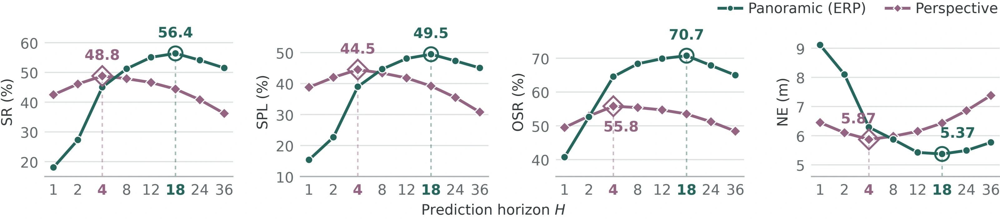
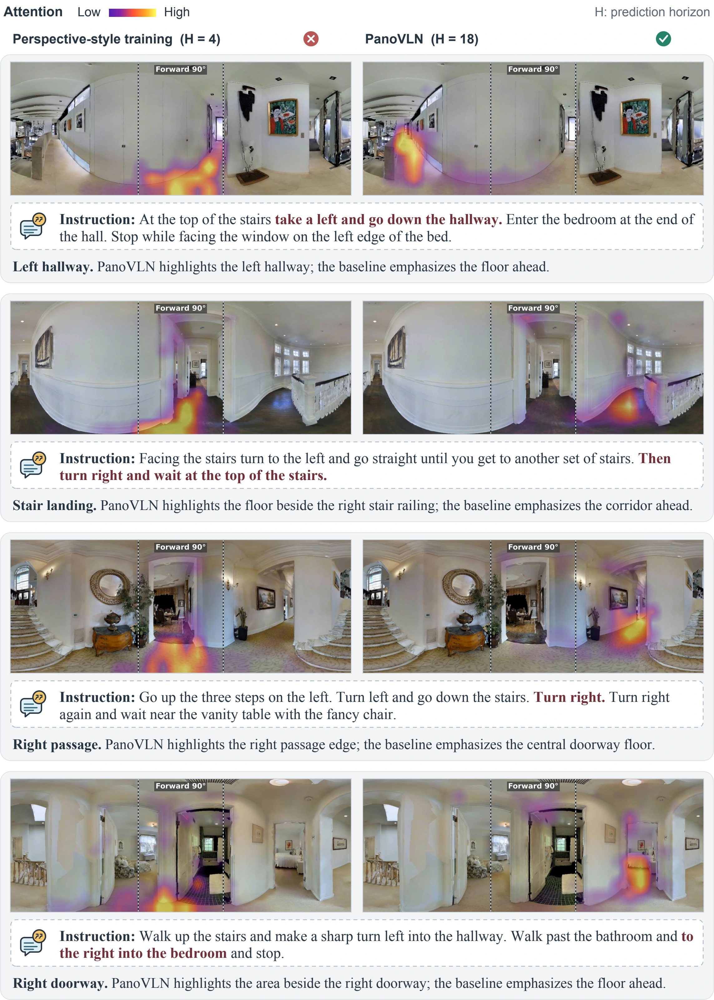
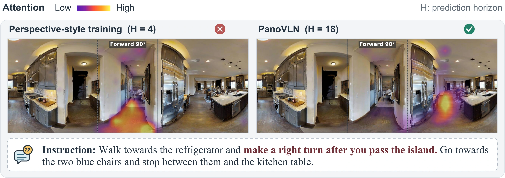
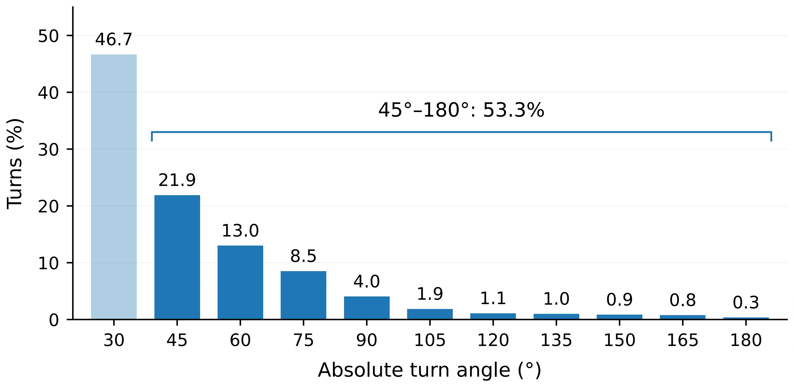
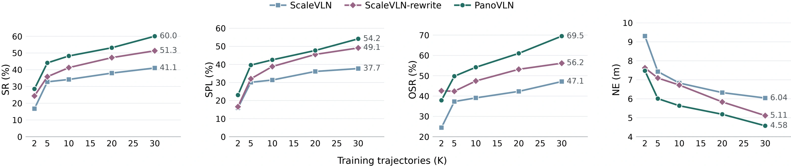
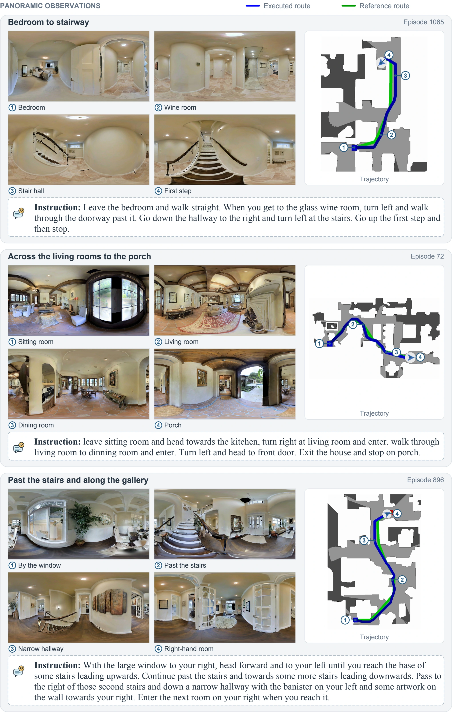
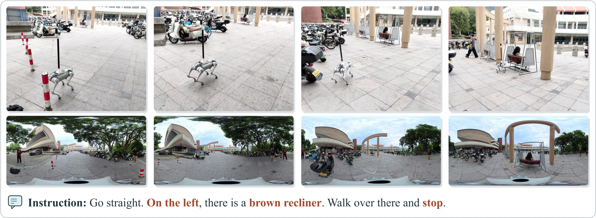
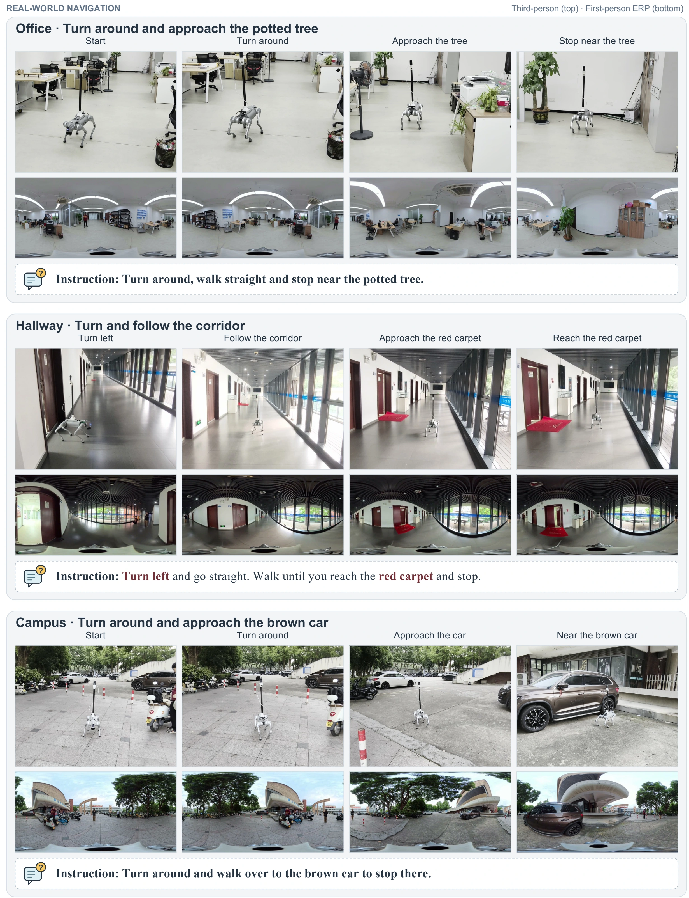
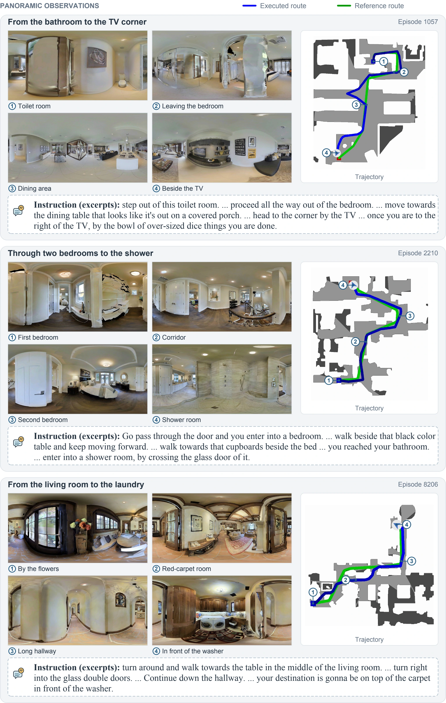
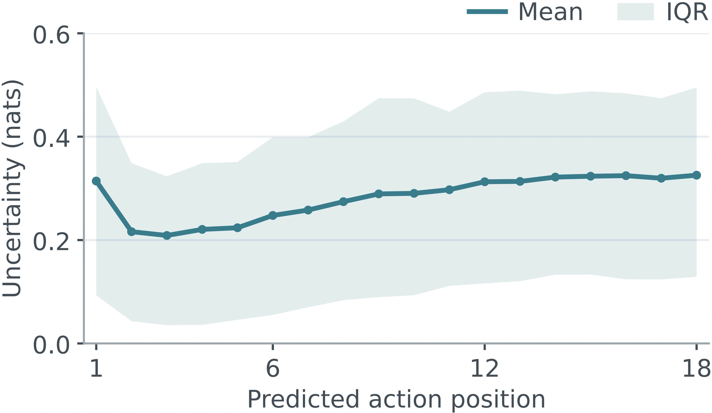


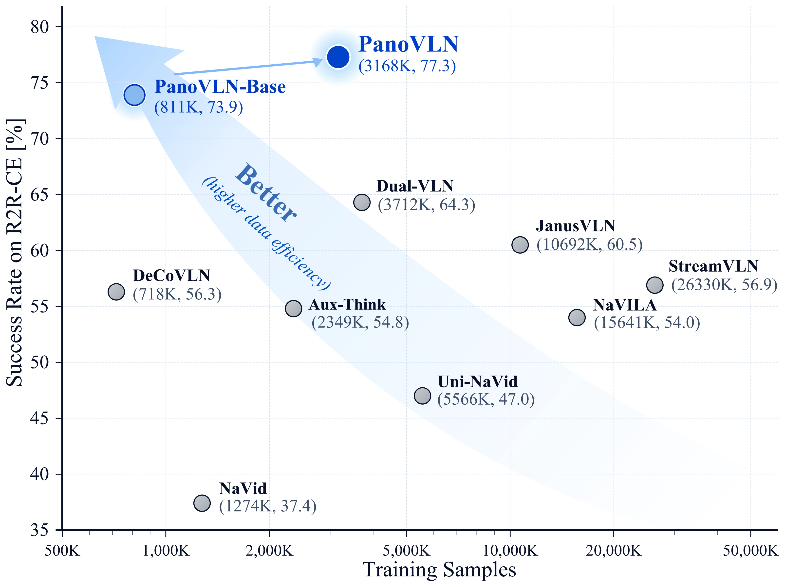
Start with a checkpoint, reproduce an experiment, or extend the navigation pipeline.
Installation, training, evaluation, dataset construction, and real-world deployment.
Get startedChoose the base model, full PanoVLN model, or checkpoint for real-world navigation.
Base PanoVLN Real worldDownload navigation annotations and contribute experiments, integrations, or bug reports.
Dataset GitHub issuesIf PanoVLN supports your research, please cite the project. The arXiv identifier will be added after publication.
@misc{wang2026panovln,
title = {PanoVLN: Towards Effective Panoramic
Vision-and-Language Navigation},
author = {Zhen Wang and Changpeng Wang and Zhe Liu
and Zhangyang Qi and Yuxiang Lu and Zimo Zeng
and Donglian Qi and Xi Chen},
year = {2026},
url = {https://github.com/wangzhen-w/PanoVLN}
}